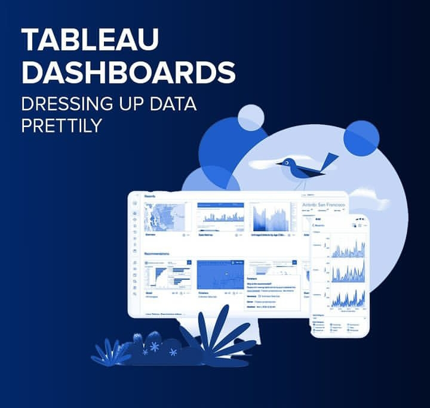

As a Tableau professional, I have expertise in developing data visualization dashboards for various industries. My portfolio includes creating an interactive trading dashboard, an intuitive HR analytics dashboard, a visually stunning Netflix Movies & TV shows dashboard, and an insightful Airbnb price dashboard. Through my work, I have honed my skills in data analysis, data visualization, and dashboard design, using Tableau's powerful features to deliver impactful insights and drive strategic decision-making.

I have professional-level skills in SQL, with experience in writing queries, creating tables and optimizing database performance. My proficiency in these areas makes me a valuable asset to organizations relying on SQL for data management and analysis.
With a wealth of experience and demonstrated success, I possess exceptional proficiency in R-programming. I have executed various projects to great effect, including a customer segmentation analysis utilizing k-means clustering. Furthermore, I have uploaded multiple datasets, codes, and learning materials, including "Data Science-With-R-Workflow," showcasing my advanced skills in data analysis, visualization, and manipulation.

I possess a high level of proficiency in managing spreadsheets, tables, and pivot tables, running and creating macros, and analyzing and visualizing data. My skill set also includes validating data, proofreading and editing copy, and preparing documents for print. I am capable of creating documents, managing tables of content, embedding multimedia, and creating impactful presentations.My exceptional Microsoft Office skills enable me to efficiently manage tasks with a high-quality output.
I have great Python skills, allowing me to write efficient and maintainable code for various tasks. Employers in many fields seek out Python skills for tasks such as data analysis, machine learning, web development, automation, and scientific computing. My expertise in Python has enhanced my career opportunities and enabled me to succeed in the fast-changing digital world.
Business Intelligence (BI) and Data Analytics are crucial fields in today's digital age. With the ever-increasing amount of data generated, organizations need experts who can effectively analyze this data to drive informed decision-making.
This program enhances financial professionals' skills in modeling and valuation analysis, covering financial statement analysis, forecasting, cash flow modeling, DCF analysis, and valuation techniques. This certification is valuable for decision-making in mergers, fundraising, budgeting, and strategic planning across industries, increasing job marketability.